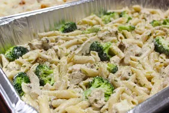

Alfreddy Chicks

Description :
Chicken Alfredo is a creamy, comforting pasta dish featuring tender chicken pieces and rich Alfredo sauce.
Its perfect for a quick weeknight dinner or a cozy meal.
Ingredients :
- 2 boneless, skinless chicken breasts
- Salt, pepper, garlic powder (for seasoning)
- 2 tablespoons olive oil
- 1/2 cup sour cream
- 3 tablespoons butter/li>
- 4 cloves garlic, minced
- 1/2 cup black beans or corn (optional)
- Fresh cilantro, chopped (optional, for garnish)
steps :
- Preheat Oven: Preheat your oven to 375°F (190°C).
- Prepare Filling: In a large bowl, mix the shredded chicken, 1 cup of shredded cheese, diced onion, black beans or corn (if using), and half of the enchilada sauce.
- Assemble Enchiladas: Spoon the chicken mixture into each tortilla, roll them up, and place seam-side down in a greased baking dish.
- Top with Sauce and Cheese: Pour the remaining enchilada sauce over the rolled tortillas, spreading it evenly. Top with the remaining shredded cheese.
- Bake: Cover with foil and bake for 20 minutes. Remove the foil and bake for an additional 5-10 minutes, or until the cheese is melted and bubbly.
- Serve: Garnish with chopped cilantro and a dollop of sour cream. Serve hot with rice, beans, or a fresh salad.
These enchiladas are easy, cheesy, and perfect for using up rotisserie chicken in a delicious new way! :D